Projeto de mobiliário e desenho técnico · freelance
Mesa de trabalho e guarda-roupas
Projeto individual, feito como freelance. Duas peças sob medida para a suíte de 3,88 por 3,48 metros de uma cliente: uma mesa de trabalho e um guarda-roupas. A entrega foram as pranchas técnicas, completas o bastante para o marceneiro executar sem depender de mim.
- Tipo
- Projeto físico
- Escopo
- Suíte de 3,88 × 3,48 m
- Entrega
- Pranchas técnicas de duas peças
- Situação
- Construído
Plantas
O quarto levantado e os dois móveis posicionados nele.
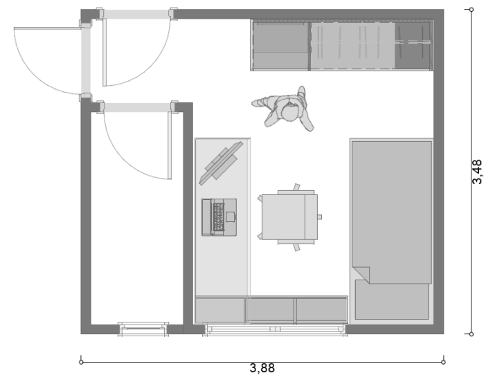
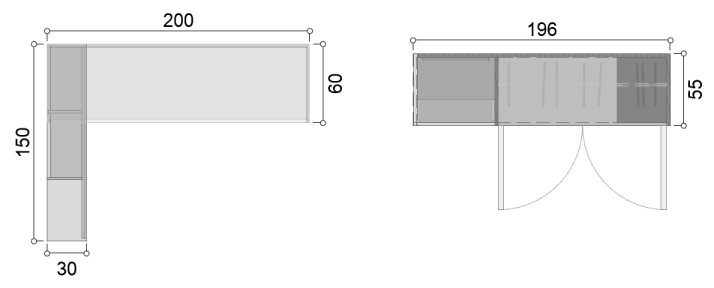
Seções de corte
Onde cada corte passa, marcado em planta.
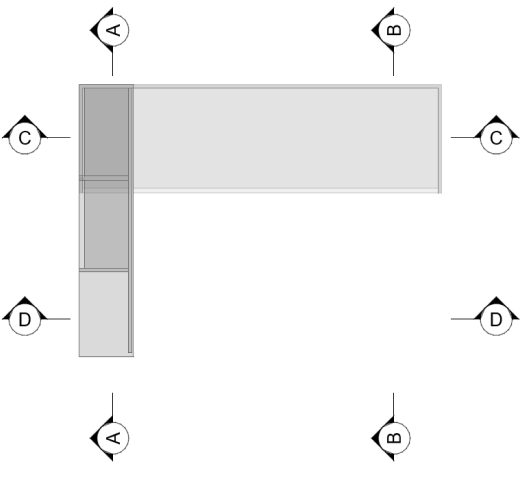
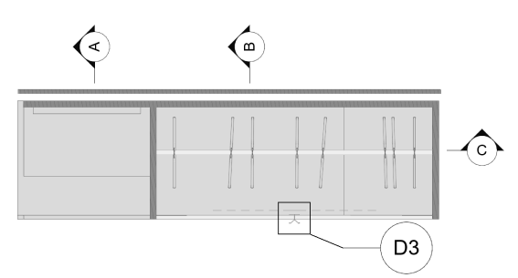
Cortes da mesa de trabalho
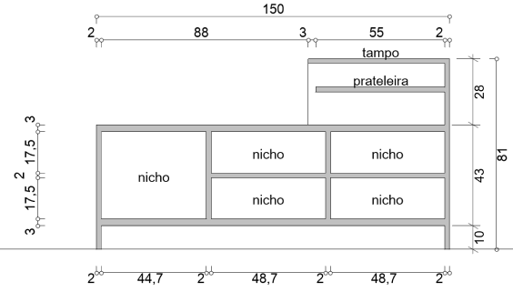
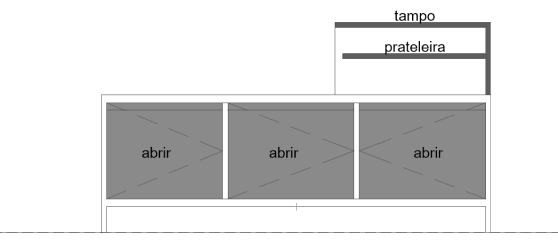
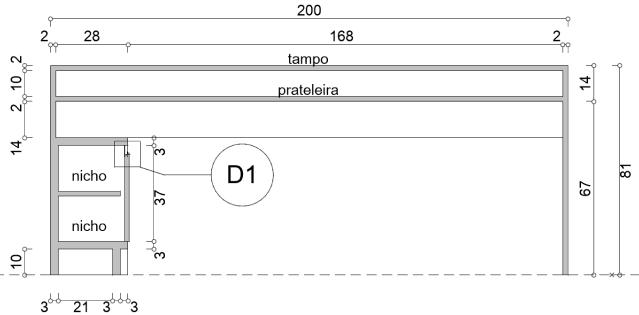
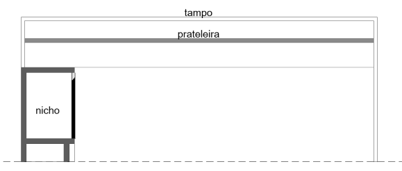
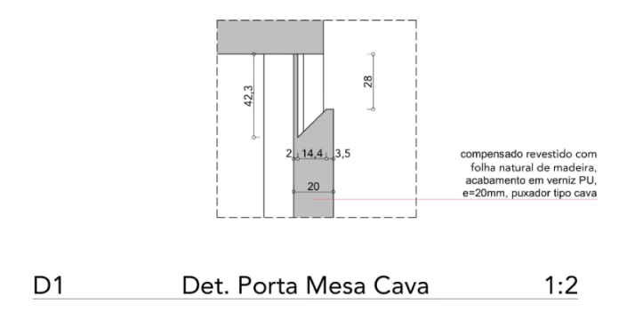
Cortes do guarda-roupas
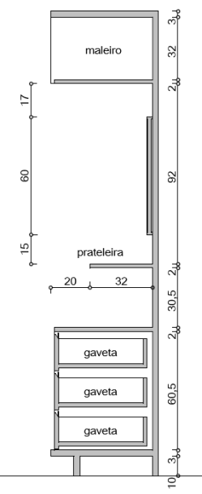
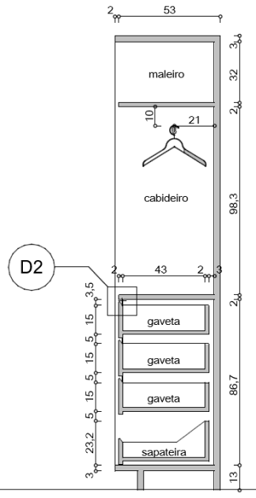
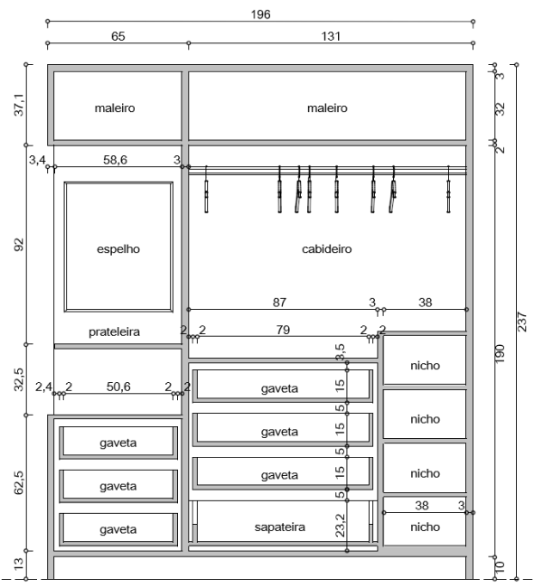
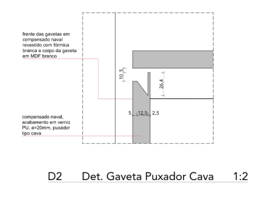
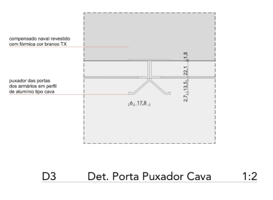
Isométricas
As duas peças estudadas com as portas fechadas e abertas.
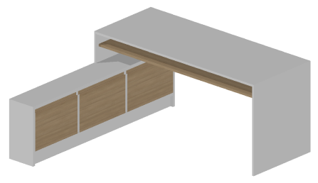
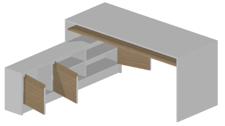
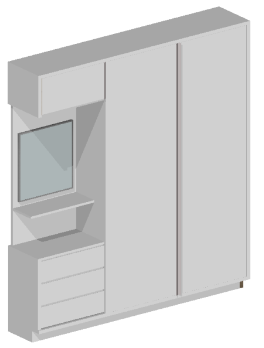
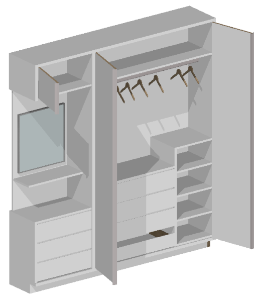
Resultado
Depois da entrega, as pranchas técnicas foram para o profissional especialista montar os mobiliários.
Grande parte do projeto se manteve. Mudaram algumas cores, entraram gavetas na mesa de trabalho e o espelho do guarda-roupas não foi instalado.
As fotos a seguir são amadoras, tiradas pela cliente.
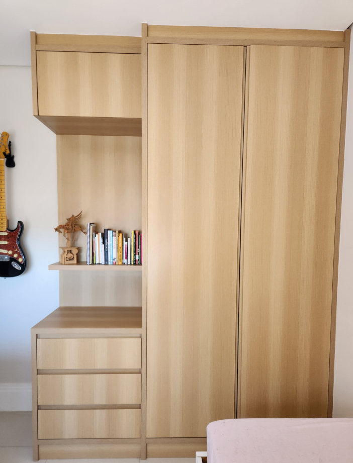
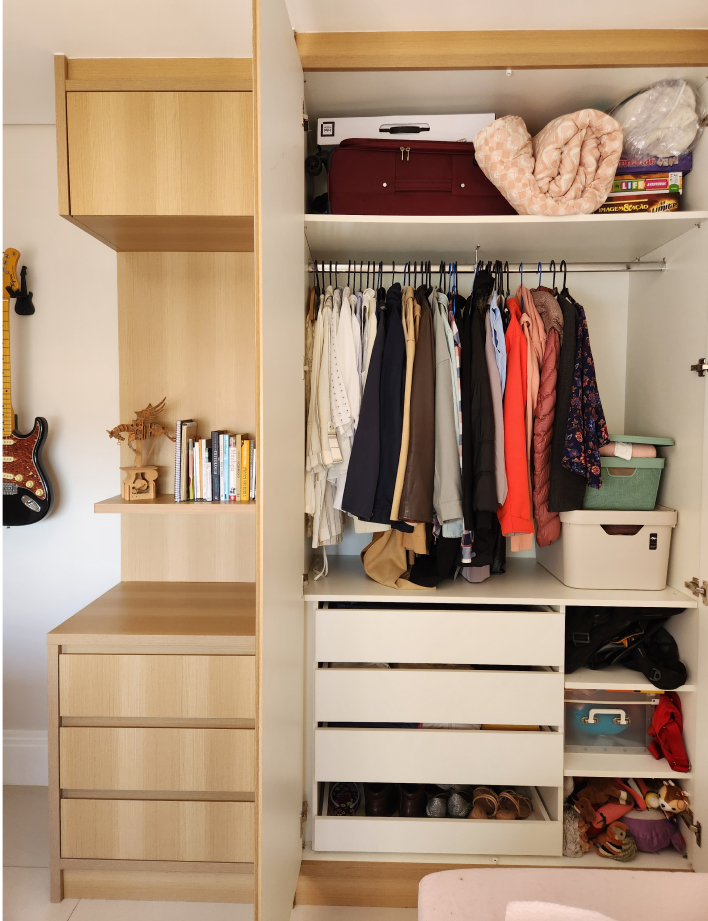
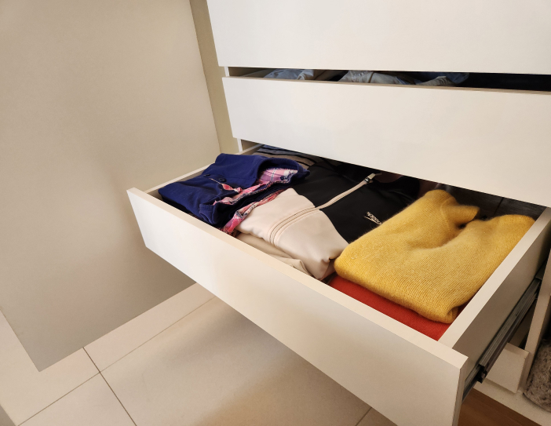
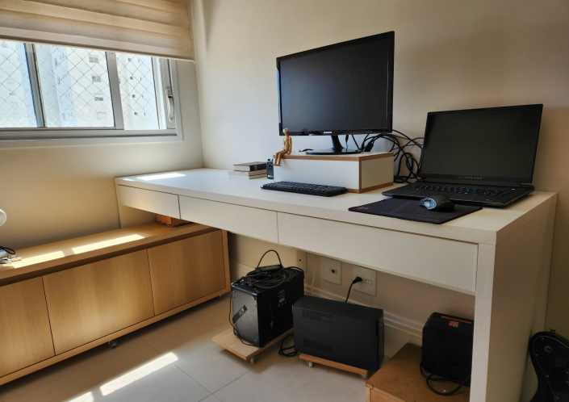
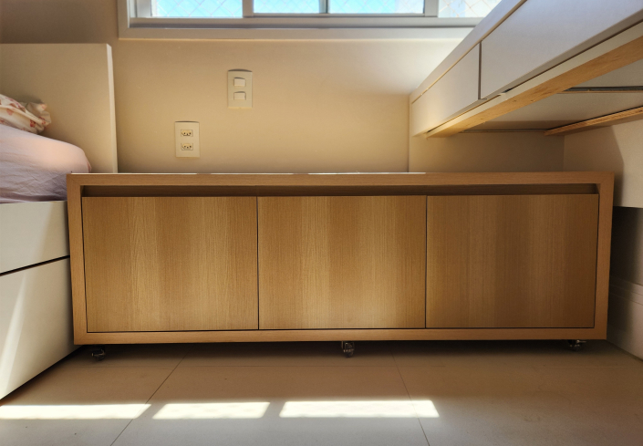
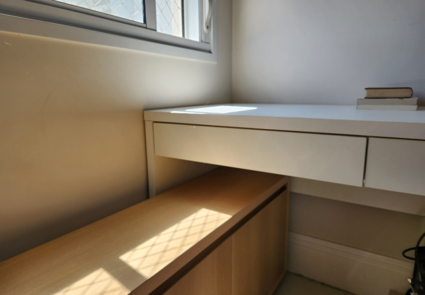